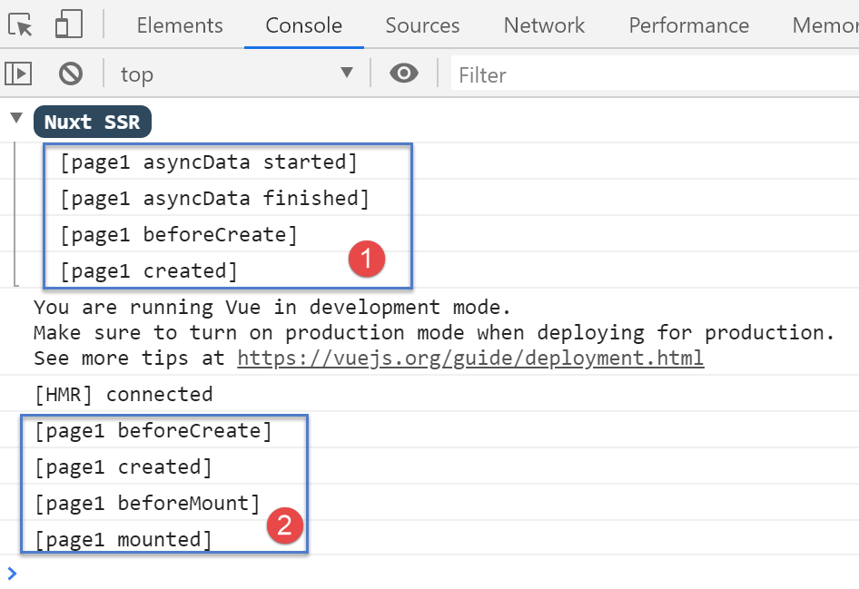

13. Example [nuxt-10]: asyncData and loading
The [asyncData] function in a page allows for the asynchronous loading of data, which is often external. [nuxt] waits for the [asyncData] function to finish before starting the page’s lifecycle. The page is therefore only rendered once the external data has been obtained. It is executed by both the server and the client according to the following rules:
- when the page is requested directly from the server, only the server executes the [asyncData] function;
- then, during client-side navigation, only the client executes the [asyncData] function;
Ultimately, only one of the two—client or server—executes the function. Additionally, when the client executes the [asyncData] function, [nuxt] displays a progress bar that can be configured.
The [asyncData] function allows pages to be delivered to search engines along with their data, making them more meaningful.
The [nuxt-10] example is initially created by cloning the [nuxt-01] project:

Only the [page1] page changes.
13.1. The [page1] page
The code for the [page1] page is as follows:
<!-- view #1 -->
<template>
<Layout :left="true" :right="true">
<!-- navigation -->
<Navigation slot="left" />
<!-- message -->
<b-alert slot="right" show variant="primary"> Page 1 -- result={{ result }} </b-alert>
</Layout>
</template>
<script>
/* eslint-disable no-console */
/* eslint-disable nuxt/no-timing-in-fetch-data */
import Navigation from '@/components/navigation'
import Layout from '@/components/layout'
export default {
name: 'Page1',
// components used
components: {
Layout,
Navigation
},
// asynchronous data
asyncData(context) {
// log
console.log('[page1 asyncData started]')
// return a promise
return new Promise(function(resolve, reject) {
// simulate an asynchronous function
setTimeout(function () {
// return the asynchronous result—a random number here
resolve({ result: Math.floor(Math.random() * Math.floor(100)) })
// log
console.log('[page1 asyncData finished]')
}, 5000)
})
},
// lifecycle
beforeCreate() {
console.log('[page1 beforeCreate]')
},
created() {
console.log('[page1 created]')
},
beforeMount() {
console.log('[page1 beforeMount]')
},
mounted() {
console.log('[page1 mounted]')
}
}
</script>
- lines 26–39: the [asyncData] function. We have already covered this function (see linked section). It is executed before the page lifecycle. For this reason, the [this] keyword cannot be used within the function;
- line 30: it must return a [Promise] or use the async/await syntax;
- lines 32–37: the asynchronous function of the promise is simulated with a 5-second wait (line 37);
- line 34: the result of the asynchronous function is returned as an object {result:...}. The asynchronous object returned by the [asyncData] function is integrated into the page’s [data] object. This is why the [result] object is available on line 7 of the template even though the page had not defined a [data] object; ## 13.2. **Configuring** the **[asyncData]** progress bar
When the [page1] page is the target of a navigation within the client (SPA mode), the client executes the [asyncData] function, and [nuxt] then displays a progress bar that it hides once the [asyncData] function has returned its result. The [loading] property in the [nuxt.config.js] file allows you to configure this bar:
loading: {
color: 'blue',
height: '5px',
throttle: 200,
continuous: true
},
By default, the [nuxt] loading image is a progress bar that spans the width of the page. This bar has a color and a thickness. The colored line gradually grows from 0% to 100% of its size, at a rate that varies depending on the duration of the wait.
- line 2: sets the color of the progress bar;
- line 3: sets the bar’s thickness in pixels;
- line 4: [throttle] is the delay in milliseconds before the animation starts. This prevents an animation image from appearing when the [asyncData] function returns its result quickly;
- line 5: [continuous] sets the behavior of the progress bar animation. By default, the bar grows gradually from 0% to 100% of its size, at a faster or slower rate depending on the wait time. With [continuous:true], the colored bar grows at a constant speed from 0 to 100% of its size, then repeats until the [asyncData] function returns its result; ## 13.3. **Execution**
Let’s launch the application, then manually request the [page1] page from the server:

The logs are as follows:

- we see that only server [1] executed the [asyncData] function, and it did so before the page cycle;
Now let’s examine the page sent by the server (source code):
<!doctype html>
<html data-n-head-ssr>
<head>
<title>Introduction to [nuxt.js]</title>
<meta data-n-head="ssr" charset="utf-8">
<meta data-n-head="ssr" name="viewport" content="width=device-width, initial-scale=1">
<meta data-n-head="ssr" data-hid="description" name="description" content="ssr routing loading asyncdata middleware plugins store">
<link data-n-head="ssr" rel="icon" type="image/x-icon" href="/favicon.ico">
<base href="/nuxt-10/">
<link rel="preload" href="/nuxt-10/_nuxt/runtime.js" as="script">
<link rel="preload" href="/nuxt-10/_nuxt/commons.app.js" as="script">
<link rel="preload" href="/nuxt-10/_nuxt/vendors.app.js" as="script">
<link rel="preload" href="/nuxt-10/_nuxt/app.js" as="script">
...
</head>
<body>
<div data-server-rendered="true" id="__nuxt">
<div id="__layout">
<div class="container">
<div class="card">
<div class="card-body">
<div role="alert" aria-live="polite" aria-atomic="true" align="center" class="alert alert-success">
<h4>[nuxt-10]: asyncData and loading</h4>
</div>
<div>
<div class="row">
<div class="col-2">
<ul class="nav flex-column">
<li class="nav-item">
<a href="/nuxt-10/" target="_self" class="nav-link">
Home
</a>
</li>
<li class="nav-item">
<a href="/nuxt-10/page1" target="_self" class="nav-link active nuxt-link-active">
Page 1
</a>
</li>
<li class="nav-item">
Page 2
</a>
</li>
</ul>
</div> <div class="col-10"><div role="alert" aria-live="polite" aria-atomic="true" class="alert alert-primary"> Page 1 -- result=3 </div></div>
</div>
</div>
</div>
</div>
</div>
</div>
</div>
<script>window.__NUXT__ = (function (a, b, c) {
return {
layout: "default", data: [{ result: 3 }], error: null, serverRendered: true,
logs: [
{ date: new Date(1574939615256), args: ["[page1 asyncData started]"], type: a, level: b, tag: c },
{ date: new Date(1574939620263), args: ["[page1 asyncData finished]"], type: a, level: b, tag: c },
{ date: new Date(1574939620285), args: ["[page1 beforeCreate]"], type: a, level: b, tag: c },
{ date: new Date(1574939620287), args: ["[page1 created]"], type: a, level: b, tag: c }
]
}
}("log", 2, ""));</script>
<script src="/nuxt-10/_nuxt/runtime.js" defer></script>
<script src="/nuxt-10/_nuxt/commons.app.js" defer></script>
<script src="/nuxt-10/_nuxt/vendors.app.js" defer></script>
<script src="/nuxt-10/_nuxt/app.js" defer></script>
</body>
</html>
- Line 55: We can see that the server sent the client an array [data] containing the object [result:3], which was integrated into the [data] object of the server’s [page1] page. So that the client can do the same and thus display the same page as the server, the server sends the [result] object to the client. Remember that the client will not execute the [asyncData] function. It will simply use the data calculated by the server;
Now let’s navigate from the [Home] page to the [Page 1] page using the navigation menu:

- At [1], the progress bar appears;
After 5 seconds, we have the [Page 1] page:

The logs are as follows:

We can see that the client executed the [asyncData] function before the page lifecycle.